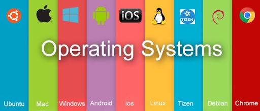

- Batch Operating System
Some computer processes are very lengthy and time-consuming. To speed the same process, a job with a similar type of needs are batched together and run as a group.
The user of a batch operating system never directly interacts with the computer. In this type of OS, every user prepares his or her job on an offline device like a punch card and submit it to the computer operator.
- Multi-Tasking/Time-sharing Operating systems
Time-sharing operating system enables people located at a different terminal(shell) to use a single computer system at the same time. The processor time (CPU) which is shared among multiple users is termed as time sharing.
- Real time OS
A real time operating system time interval to process and respond to inputs is very small. Examples: Military Software Systems, Space Software Systems.
- Distributed Operating System
Distributed systems use many processors located in different machines to provide very fast computation to its users.
- Network Operating System
Network Operating System runs on a server. It provides the capability to serve to manage data, user, groups, security, application, and other networking functions.
- Mobile OS
Mobile operating systems are those OS which is especially that are designed to power smartphones, tablets, and wearables devices.
Some most famous mobile operating systems are Android and iOS, but others include BlackBerry, Web, and watchOS.
